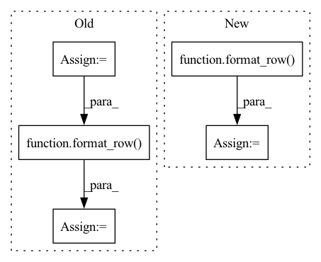

Pattern ID :24493
Before Change
else:
layer_rows = ""
for layer, layer_info in summary_dict.items():
param_count = layer_info.num_params_to_str()
new_line = format_row( layer, layer_info.output_size, param_count)
if verbose:
for inner_name, inner_shape in layer_info.inner_layers.items():
new_line += f" {inner_name:<13} {str(inner_shape):>20}\n"
layer_rows += new_line
summary_str = (
f"{"-" * width}\n"After Change
"mult_adds": "Mult-Adds"
}
headers = [header_mapping[x] for x in formatting.col_names]
header_row = format_row( "Layer (type:depth-idx)", headers, formatting)
if formatting.use_branching:
layer_rows = print_layer_tree(summary_list, formatting)
else:
layer_rows = print_layer_list(summary_list, formatting)In pattern: SUPERPATTERN
Frequency: 3
Non-data size: 5
Instances Fragment ID: 76225165
Project Name: tyleryep/torchinfo
Commit Name: 06bbb08ea465ccca0f2ead7f85b650794eaec878
Time: 2020-03-20
Author: tyep@stanford.edu
File Name: torchsummary/torchsummary.py
M Class Name: AnonimousClass
N Class Name: AnonimousClass
M Method Name: print_results(3)
N Method Name: print_results(6)
M Parent Class:
N Parent Class:
M File Name: torchsummary/torchsummary.py
N File Name: torchsummary/torchsummary.py
M Start Line: 214
M End Line: 264
N Start Line: 256
N End Line: 314
Before Change
"mult_adds": self.macs_to_str(reached_max_depth)
}
info_to_format = [mapping[row_type] for row_type in formatting.col_names]
name = self.key_name
if formatting.use_branching:
name = get_start_str(self.depth) + name
new_line = format_row( name, info_to_format, formatting)
if formatting.verbose:
for inner_name, inner_shape in self.inner_layers.items():
if formatting.use_branching:
newline += f"{get_start_str(self.depth + 1)}"After Change
if formatting.use_branching:
name = get_start_str(self.depth) + name
new_line = format_row( name, mapping, formatting)
if formatting.verbose:
for inner_name, inner_shape in self.inner_layers.items():
if formatting.use_branching:
inner_name = get_start_str(self.depth + 1) + inner_name Fragment ID: 76225155
Project Name: tyleryep/torchinfo
Commit Name: f1e2b125b2d1133ec822bc530ccbe3a0c6ccc97e
Time: 2020-03-21
Author: tyep@stanford.edu
File Name: torchsummary/torchsummary.py
M Class Name: LayerInfo
N Class Name: LayerInfo
M Method Name: layer_info_to_row(3)
N Method Name: layer_info_to_row(3)
M Parent Class:
N Parent Class:
M File Name: torchsummary/torchsummary.py
N File Name: torchsummary/torchsummary.py
M Start Line: 204
M End Line: 220
N Start Line: 214
N End Line: 231
Before Change
inner_name = get_start_str(self.depth + 1) + inner_name
else:
inner_name = " " + inner_name
new_line += format_row( inner_name, {"kernel_size": str(inner_shape)}, formatting)
return new_line
def format_row(layer_name, mapping, formatting):After Change
if formatting.verbose:
for inner_name, inner_shape in self.inner_layers.items():
prefix = get_start_str(self.depth + 1) if formatting.use_branching else " "
extra_row_values = {"kernel_size": str(inner_shape)}
new_line += format_row( prefix + inner_name, extra_row_values, formatting)
return new_line
def format_row(layer_name, row_values, formatting): Fragment ID: 76225158
Project Name: tyleryep/torchinfo
Commit Name: 6b140a0098aeaa54035db7ef650f7e3b4cdd3bb5
Time: 2020-03-21
Author: tyep@stanford.edu
File Name: torchsummary/torchsummary.py
M Class Name: LayerInfo
N Class Name: LayerInfo
M Method Name: layer_info_to_row(3)
N Method Name: layer_info_to_row(3)
M Parent Class:
N Parent Class:
M File Name: torchsummary/torchsummary.py
N File Name: torchsummary/torchsummary.py
M Start Line: 220
M End Line: 231
N Start Line: 220
N End Line: 228